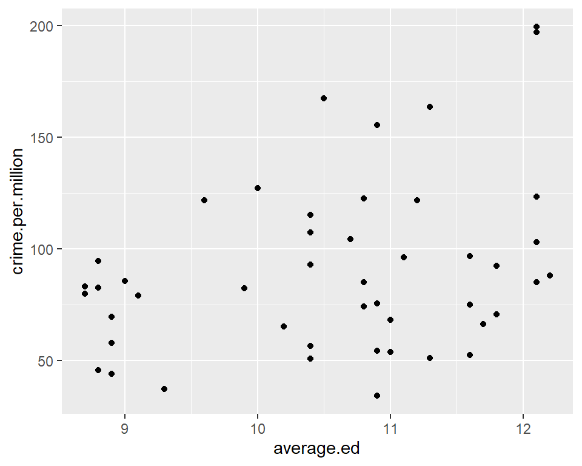
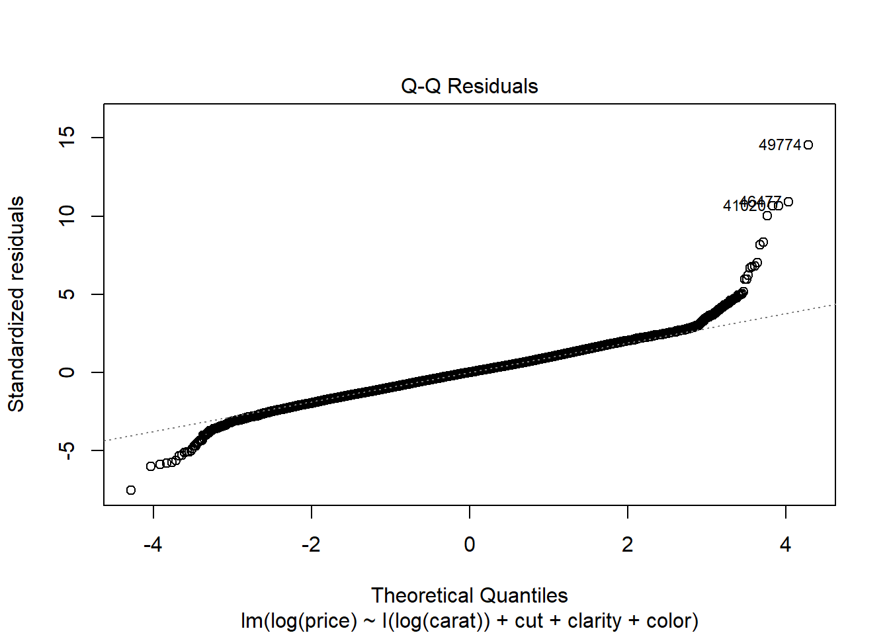
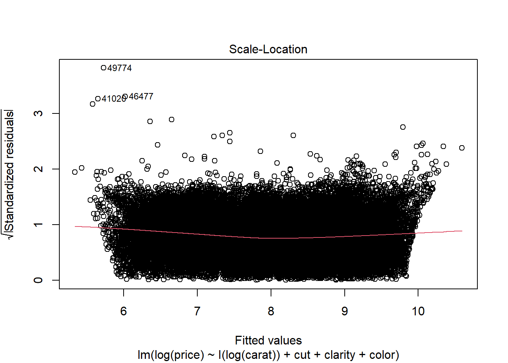
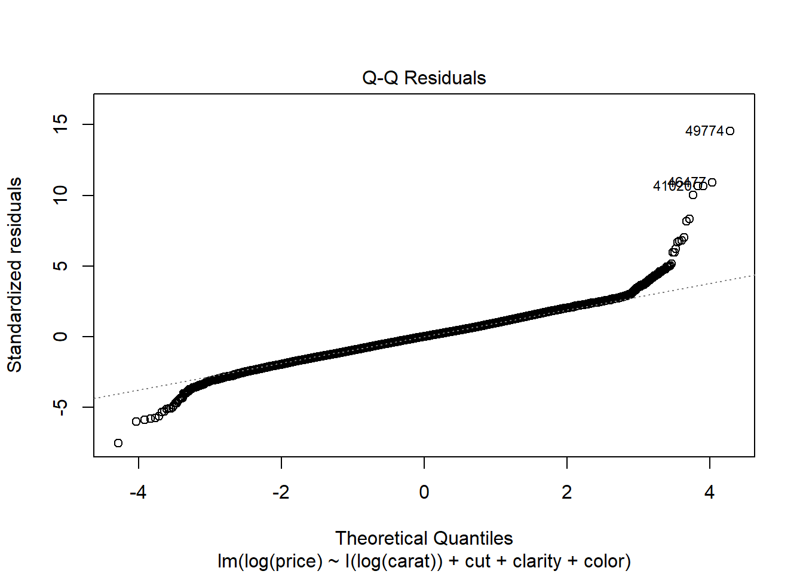
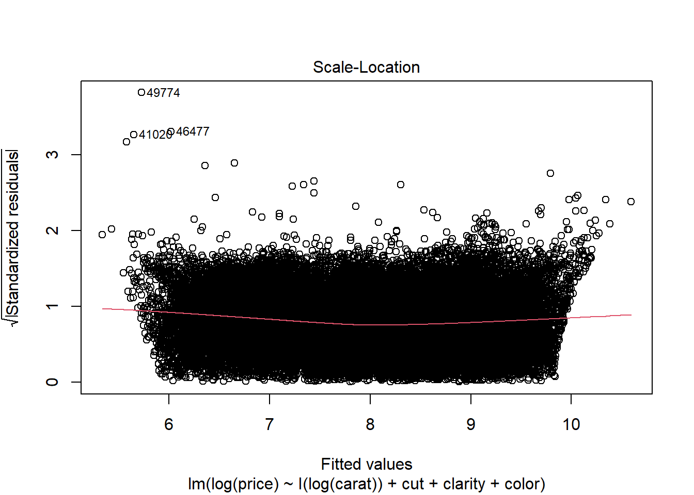
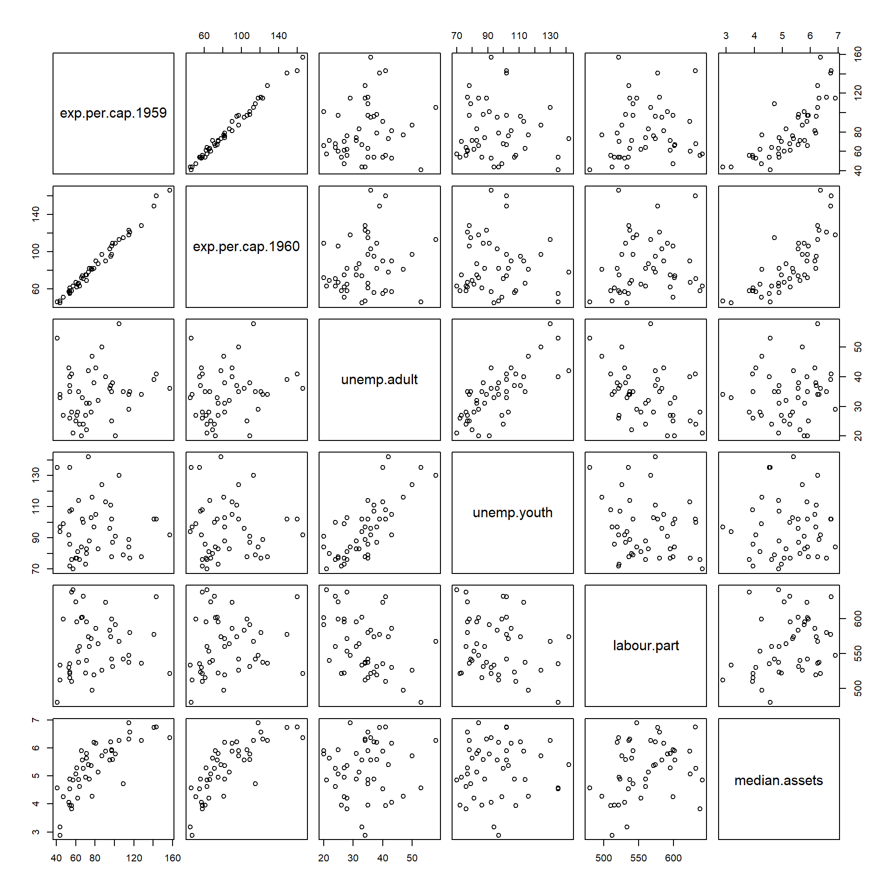
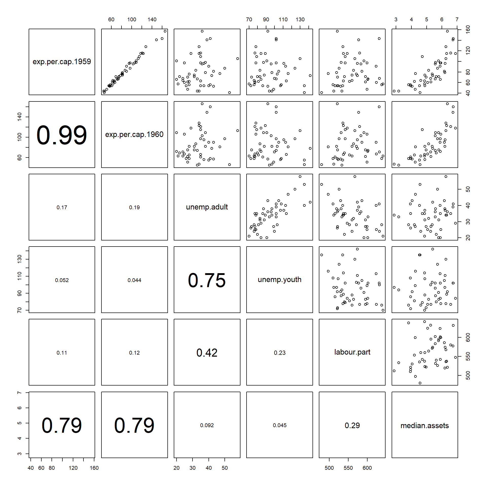

Simple Linear Regression by R
Import data
library(tidyverse)
library(GGally)
library(knitr)Data set and code source:
Most code of the this page are directly copied and I only add some basic math for explaining the simple linear regression.
crime <- read_delim("http://www.andrew.cmu.edu/user/achoulde/94842/data/crime_simple.txt", delim = "\t")### Rename the data set by code from Prof. Chouldechova
crime <- crime %>%
rename(crime.per.million = R,
young.males = Age,
is.south = S,
average.ed = Ed,
exp.per.cap.1960 = Ex0,
exp.per.cap.1959 = Ex1,
labour.part = LF,
male.per.fem = M,
population = N,
nonwhite = NW,
unemp.youth = U1,
unemp.adult = U2,
median.assets = W,
num.low.salary = X) %>%
mutate(is.south = as.factor(is.south),
average.ed = average.ed / 10,
median.assets = median.assets / 100)
# print summary of the data
summary(crime)## crime.per.million young.males is.south average.ed exp.per.cap.1960 exp.per.cap.1959 labour.part
## Min. : 34.20 Min. :119.0 0:31 Min. : 8.70 Min. : 45.0 Min. : 41.00 Min. :480.0
## 1st Qu.: 65.85 1st Qu.:130.0 1:16 1st Qu.: 9.75 1st Qu.: 62.5 1st Qu.: 58.50 1st Qu.:530.5
## Median : 83.10 Median :136.0 Median :10.80 Median : 78.0 Median : 73.00 Median :560.0
## Mean : 90.51 Mean :138.6 Mean :10.56 Mean : 85.0 Mean : 80.23 Mean :561.2
## 3rd Qu.:105.75 3rd Qu.:146.0 3rd Qu.:11.45 3rd Qu.:104.5 3rd Qu.: 97.00 3rd Qu.:593.0
## Max. :199.30 Max. :177.0 Max. :12.20 Max. :166.0 Max. :157.00 Max. :641.0
## male.per.fem population nonwhite unemp.youth unemp.adult median.assets num.low.salary
## Min. : 934.0 Min. : 3.00 Min. : 2.0 Min. : 70.00 Min. :20.00 Min. :2.880 Min. :126.0
## 1st Qu.: 964.5 1st Qu.: 10.00 1st Qu.: 24.0 1st Qu.: 80.50 1st Qu.:27.50 1st Qu.:4.595 1st Qu.:165.5
## Median : 977.0 Median : 25.00 Median : 76.0 Median : 92.00 Median :34.00 Median :5.370 Median :176.0
## Mean : 983.0 Mean : 36.62 Mean :101.1 Mean : 95.47 Mean :33.98 Mean :5.254 Mean :194.0
## 3rd Qu.: 992.0 3rd Qu.: 41.50 3rd Qu.:132.5 3rd Qu.:104.00 3rd Qu.:38.50 3rd Qu.:5.915 3rd Qu.:227.5
## Max. :1071.0 Max. :168.00 Max. :423.0 Max. :142.00 Max. :58.00 Max. :6.890 Max. :276.0str(crime)## tibble [47 × 14] (S3: tbl_df/tbl/data.frame)
## $ crime.per.million: num [1:47] 79.1 163.5 57.8 196.9 123.4 ...
## $ young.males : num [1:47] 151 143 142 136 141 121 127 131 157 140 ...
## $ is.south : Factor w/ 2 levels "0","1": 2 1 2 1 1 1 2 2 2 1 ...
## $ average.ed : num [1:47] 9.1 11.3 8.9 12.1 12.1 11 11.1 10.9 9 11.8 ...
## $ exp.per.cap.1960 : num [1:47] 58 103 45 149 109 118 82 115 65 71 ...
## $ exp.per.cap.1959 : num [1:47] 56 95 44 141 101 115 79 109 62 68 ...
## $ labour.part : num [1:47] 510 583 533 577 591 547 519 542 553 632 ...
## $ male.per.fem : num [1:47] 950 1012 969 994 985 ...
## $ population : num [1:47] 33 13 18 157 18 25 4 50 39 7 ...
## $ nonwhite : num [1:47] 301 102 219 80 30 44 139 179 286 15 ...
## $ unemp.youth : num [1:47] 108 96 94 102 91 84 97 79 81 100 ...
## $ unemp.adult : num [1:47] 41 36 33 39 20 29 38 35 28 24 ...
## $ median.assets : num [1:47] 3.94 5.57 3.18 6.73 5.78 6.89 6.2 4.72 4.21 5.26 ...
## $ num.low.salary : num [1:47] 261 194 250 167 174 126 168 206 239 174 ...Visualization
You can start by feeding everything into a regression, but it’s often a better idea to construct some simple plots (e.g., scatterplots and boxplots) and summary statistics to get some sense of how the data behaves.
# Scatter plot of outcome (crime.per.million) against average.ed
qplot(average.ed, crime.per.million, data = crime)
# correlation between education and crime
with(crime, cor(average.ed, crime.per.million))## [1] 0.3228349This seems to suggest that higher levels of average education are associated with higher crime rates. Can you come up with an explanation for this phenomenon?
# Scatter plot of outcome (crime.per.million) against median.assets
qplot(median.assets, crime.per.million, data = crime)# correlation between education and crime
with(crime, cor(median.assets, crime.per.million))## [1] 0.4413199There also appears to be a positive association between median assets and crime rates.
# Boxplots showing crime rate broken down by southern vs non-southern state
qplot(is.south, crime.per.million, geom = "boxplot", data = crime)
Theory behind simple linear regression model
Suppose we are modeling a simple linear regression, y is the independent variable and x is the dependent variable.
x<-c(1,3,4,7,8)
y<-c(12,11,7,5,3)
cbind(x,y)## x y
## [1,] 1 12
## [2,] 3 11
## [3,] 4 7
## [4,] 7 5
## [5,] 8 3True model
\(y=\beta_0+\beta_1x+\epsilon\)
Estimated model
\(\hat{y}=\hat{\beta}_0+\hat{\beta}_1x\) or \(\hat{y}=b_0+b_1x\)
Residual
\(e=y-\hat{y}\) or (\(\hat{\epsilon}=y-\hat{y}\) )
Assumption of the residual \(\epsilon\).
- The \(\epsilon\) follows normal distribution with mean 0 and a constant standard deviation.
- The error terms are independent.
We have other further details in the assumption, we will learn to check later.
Sample correlation coefficient \(r\) between \(x\) and \(y\)
\[r=\frac{\sum(x-\bar{x})(y-\bar{y})}{\sqrt{\sum(x-\bar{x})^2\sum(y-\bar{y})^2}}=\frac{\sum(x-\bar{x})(y-\bar{y})}{(n-1)s_xs_y}\] (given \(\sum(x-\bar{x})(y-\bar{y})= -42.8\), \(s_x=2.88\), \(s_y=3.85\))
cor(x,y)## [1] -0.9654146Least square estimators \(\hat{\beta}_0\) and \(\hat{\beta}_1\)
\[\hat{\beta}_1=b_1=r\frac{s_y}{s_x} , \quad \hat{\beta}_0=b_0=\bar{y}-b_1\bar{x}\]
summary(lm(y~x))##
## Call:
## lm(formula = y ~ x)
##
## Residuals:
## 1 2 3 4 5
## -0.2410 1.3373 -1.3735 0.4940 -0.2169
##
## Coefficients:
## Estimate Std. Error t value Pr(>|t|)
## (Intercept) 13.530 1.060 12.767 0.00104 **
## x -1.289 0.201 -6.414 0.00768 **
## ---
## Signif. codes: 0 '***' 0.001 '**' 0.01 '*' 0.05 '.' 0.1 ' ' 1
##
## Residual standard error: 1.158 on 3 degrees of freedom
## Multiple R-squared: 0.932, Adjusted R-squared: 0.9094
## F-statistic: 41.13 on 1 and 3 DF, p-value: 0.007681Constructing a regression model by data ‘crime’
To construct a linear regression model in R, we use the
lm() function. You can specify the regression model in
various ways. The simplest is often to use the formula
specification.
The first model we fit is a regression of the outcome
(crimes.per.million) against all the other variables in the
data set. You can either write out all the variable names. or use the
shorthand y ~ . to specify that you want to include all the
variables in your regression.
crime.lm <- lm(crime.per.million ~ ., data = crime)
# Summary of the linear regression model
crime.lm##
## Call:
## lm(formula = crime.per.million ~ ., data = crime)
##
## Coefficients:
## (Intercept) young.males is.south1 average.ed exp.per.cap.1960 exp.per.cap.1959
## -6.918e+02 1.040e+00 -8.308e+00 1.802e+01 1.608e+00 -6.673e-01
## labour.part male.per.fem population nonwhite unemp.youth unemp.adult
## -4.103e-02 1.648e-01 -4.128e-02 7.175e-03 -6.017e-01 1.792e+00
## median.assets num.low.salary
## 1.374e+01 7.929e-01summary(crime.lm)##
## Call:
## lm(formula = crime.per.million ~ ., data = crime)
##
## Residuals:
## Min 1Q Median 3Q Max
## -34.884 -11.923 -1.135 13.495 50.560
##
## Coefficients:
## Estimate Std. Error t value Pr(>|t|)
## (Intercept) -6.918e+02 1.559e+02 -4.438 9.56e-05 ***
## young.males 1.040e+00 4.227e-01 2.460 0.01931 *
## is.south1 -8.308e+00 1.491e+01 -0.557 0.58117
## average.ed 1.802e+01 6.497e+00 2.773 0.00906 **
## exp.per.cap.1960 1.608e+00 1.059e+00 1.519 0.13836
## exp.per.cap.1959 -6.673e-01 1.149e+00 -0.581 0.56529
## labour.part -4.103e-02 1.535e-01 -0.267 0.79087
## male.per.fem 1.648e-01 2.099e-01 0.785 0.43806
## population -4.128e-02 1.295e-01 -0.319 0.75196
## nonwhite 7.175e-03 6.387e-02 0.112 0.91124
## unemp.youth -6.017e-01 4.372e-01 -1.376 0.17798
## unemp.adult 1.792e+00 8.561e-01 2.093 0.04407 *
## median.assets 1.374e+01 1.058e+01 1.298 0.20332
## num.low.salary 7.929e-01 2.351e-01 3.373 0.00191 **
## ---
## Signif. codes: 0 '***' 0.001 '**' 0.01 '*' 0.05 '.' 0.1 ' ' 1
##
## Residual standard error: 21.94 on 33 degrees of freedom
## Multiple R-squared: 0.7692, Adjusted R-squared: 0.6783
## F-statistic: 8.462 on 13 and 33 DF, p-value: 3.686e-07R’s default is to output values in scientific notation. This can make it hard to interpret the numbers. Here’s some code that can be used to force full printout of numbers.
options(scipen=4) # Set scipen = 0 to get back to defaultsummary(crime.lm)##
## Call:
## lm(formula = crime.per.million ~ ., data = crime)
##
## Residuals:
## Min 1Q Median 3Q Max
## -34.884 -11.923 -1.135 13.495 50.560
##
## Coefficients:
## Estimate Std. Error t value Pr(>|t|)
## (Intercept) -691.837588 155.887918 -4.438 0.0000956 ***
## young.males 1.039810 0.422708 2.460 0.01931 *
## is.south1 -8.308313 14.911588 -0.557 0.58117
## average.ed 18.016011 6.496504 2.773 0.00906 **
## exp.per.cap.1960 1.607818 1.058667 1.519 0.13836
## exp.per.cap.1959 -0.667258 1.148773 -0.581 0.56529
## labour.part -0.041031 0.153477 -0.267 0.79087
## male.per.fem 0.164795 0.209932 0.785 0.43806
## population -0.041277 0.129516 -0.319 0.75196
## nonwhite 0.007175 0.063867 0.112 0.91124
## unemp.youth -0.601675 0.437154 -1.376 0.17798
## unemp.adult 1.792263 0.856111 2.093 0.04407 *
## median.assets 13.735847 10.583028 1.298 0.20332
## num.low.salary 0.792933 0.235085 3.373 0.00191 **
## ---
## Signif. codes: 0 '***' 0.001 '**' 0.01 '*' 0.05 '.' 0.1 ' ' 1
##
## Residual standard error: 21.94 on 33 degrees of freedom
## Multiple R-squared: 0.7692, Adjusted R-squared: 0.6783
## F-statistic: 8.462 on 13 and 33 DF, p-value: 0.0000003686Looking at the p-values, it looks like num.low.salary
(number of families per 1000 earning below 1/2 the median income),
unemp.adult (Unemployment rate of urban males per 1000 of
age 35-39), average.ed (Mean # of years of schooling 25 or
older), and young.males (number of males of age 14-24 per
1000 population) are all statistically significant predictors of crime
rate.
The coefficients for these predictors are all positive, so crime rates are positively associated with wealth inequality, adult unemployment rates, average education levels, and high rates of young males in the population.
Exploring the lm object
What kind of output do we get when we run a linear model
(lm) in R?
# List all attributes of the linear model
attributes(crime.lm)## $names
## [1] "coefficients" "residuals" "effects" "rank" "fitted.values" "assign" "qr"
## [8] "df.residual" "contrasts" "xlevels" "call" "terms" "model"
##
## $class
## [1] "lm"# coefficients
crime.lm$coef## (Intercept) young.males is.south1 average.ed exp.per.cap.1960 exp.per.cap.1959 labour.part
## -691.837587905 1.039809653 -8.308312889 18.016010601 1.607818377 -0.667258285 -0.041031047
## male.per.fem population nonwhite unemp.youth unemp.adult median.assets num.low.salary
## 0.164794968 -0.041276887 0.007174688 -0.601675298 1.792262901 13.735847285 0.792932786None of the attributes seem to give you p-values. Here’s what you can do to get a table that allows you to extract p-values.
# Pull coefficients element from summary(lm) object
round(summary(crime.lm)$coef, 3)## Estimate Std. Error t value Pr(>|t|)
## (Intercept) -691.838 155.888 -4.438 0.000
## young.males 1.040 0.423 2.460 0.019
## is.south1 -8.308 14.912 -0.557 0.581
## average.ed 18.016 6.497 2.773 0.009
## exp.per.cap.1960 1.608 1.059 1.519 0.138
## exp.per.cap.1959 -0.667 1.149 -0.581 0.565
## labour.part -0.041 0.153 -0.267 0.791
## male.per.fem 0.165 0.210 0.785 0.438
## population -0.041 0.130 -0.319 0.752
## nonwhite 0.007 0.064 0.112 0.911
## unemp.youth -0.602 0.437 -1.376 0.178
## unemp.adult 1.792 0.856 2.093 0.044
## median.assets 13.736 10.583 1.298 0.203
## num.low.salary 0.793 0.235 3.373 0.002If you want a particular p-value, you can get it by doing the following
# Pull the coefficients table from summary(lm)
crime.lm.coef <- round(summary(crime.lm)$coef, 3)
# See what this gives
class(crime.lm.coef)## [1] "matrix" "array"attributes(crime.lm.coef)## $dim
## [1] 14 4
##
## $dimnames
## $dimnames[[1]]
## [1] "(Intercept)" "young.males" "is.south1" "average.ed" "exp.per.cap.1960" "exp.per.cap.1959"
## [7] "labour.part" "male.per.fem" "population" "nonwhite" "unemp.youth" "unemp.adult"
## [13] "median.assets" "num.low.salary"
##
## $dimnames[[2]]
## [1] "Estimate" "Std. Error" "t value" "Pr(>|t|)"crime.lm.coef["average.ed", "Pr(>|t|)"]## [1] 0.009The coefficients table is a matrix with named rows and columns. You can therefore access particular cells either by numeric index, or by name (as in the example above).
Plotting the lm object
plot(crime.lm)These four plots are important diagnostic tools in assessing whether the linear model is appropriate. The first two plots are the most important, but the last two can also help with identifying outliers and non-linearities.
Residuals vs. Fitted When a linear model is appropriate, we expect
the residuals will have constant variance when plotted against fitted values; and
the residuals and fitted values will be uncorrelated.
If there are clear trends in the residual plot, or the plot looks like a funnel, these are clear indicators that the given linear model is inappropriate.
Normal QQ plot You can use a linear model for prediction even if the underlying normality assumptions don’t hold. However, in order for the p-values to be believable, the residuals from the regression must look approximately normally distributed.
Scale-location plot This is another version of the residuals vs fitted plot. There should be no discernible trends in this plot.
Residuals vs Leverage. Leverage is a measure of how much an observation influenced the model fit. It’s a one-number summary of how different the model fit would be if the given observation was excluded, compared to the model fit where the observation is included. Points with high residual (poorly described by the model) and high leverage (high influence on model fit) are outliers. They’re skewing the model fit away from the rest of the data, and don’t really seem to fit with the rest of the data.
The residual vs fitted and scale-location diagnostic plots for the crime data aren’t especially insightful, largely due to the very small sample size. Below we look at the
diamondsdata to see what a more typical anaylsis of linear model diagnostic plots might reveal.
Diagnostic plots for diamonds data.
diamonds.lm <- lm(price ~ carat + cut + clarity + color, data = diamonds)
plot(diamonds.lm)Residuals vs. Fitted
There is a clear indication of non-linearity present in this plot. Furthermore, we see that the variance appears to be increasing in fitted value.
Normal QQ plot The residuals appear highly non-normal. Both the lower tail and upper tail are heavier than we would expect under normality. This may be due to the non-constant variance issue we observed in the Residuals vs. Fitted plot.
Scale-location plot We see a clear increasing trend in residual variance that runs through most of the plot. This is indicated by the upward slope of the red line, which we can interpret as the standard deviation of the residuals at the given level of fitted value.
Residuals vs Leverage. None of the points appear to be outliers.
Here’s what happens if we log-transform both the price and carat variables.
diamonds.lm2 <- lm(log(price) ~ I(log(carat)) + cut + clarity + color, data = diamonds)
plot(diamonds.lm2) 

While there remains a very slight indication of non-linearity in the Residual vs Fitted plot, the non-constant variance issue appears to have been addressed by the variable transformations. The Normal QQ plot indicates that the residuals have a heavier tailed distribution, but since we have a very large sample size this should not cause problems for inference. There do not appear to be any clear outliers in the data.
Collinearity and pairs plots
In your regression class you probably learned that
collinearity can throw off the coefficient estimates.
To diagnose collinearity, we can do a plot matrix. In base graphics,
this can be accomplished via the pairs function.
As a demo, let’s look at some of the economic indicators in our data set.
economic.var.names <- c("exp.per.cap.1959", "exp.per.cap.1960", "unemp.adult", "unemp.youth", "labour.part", "median.assets")
pairs(crime[,economic.var.names])
round(cor(crime[,economic.var.names]), 3)## exp.per.cap.1959 exp.per.cap.1960 unemp.adult unemp.youth labour.part median.assets
## exp.per.cap.1959 1.000 0.994 0.169 -0.052 0.106 0.794
## exp.per.cap.1960 0.994 1.000 0.185 -0.044 0.121 0.787
## unemp.adult 0.169 0.185 1.000 0.746 -0.421 0.092
## unemp.youth -0.052 -0.044 0.746 1.000 -0.229 0.045
## labour.part 0.106 0.121 -0.421 -0.229 1.000 0.295
## median.assets 0.794 0.787 0.092 0.045 0.295 1.000Since the above-diagonal and below-diagonal plots contain essentially
the same information, it’s often more useful to display some other
values in one of the spaces. In the example below, we use the panel.cor
function from the pairs() documentation to add text below
the diagonal.
# Function taken from ?pairs Example section.
panel.cor <- function(x, y, digits = 2, prefix = "", cex.cor, ...)
{
usr <- par("usr"); on.exit(par(usr))
par(usr = c(0, 1, 0, 1))
r <- abs(cor(x, y))
txt <- format(c(r, 0.123456789), digits = digits)[1]
txt <- paste0(prefix, txt)
if(missing(cex.cor)) cex.cor <- 0.8/strwidth(txt)
text(0.5, 0.5, txt, cex = pmax(1, cex.cor * r))
}
# Use panel.cor to display correlations in lower panel.
pairs(crime[,economic.var.names], lower.panel = panel.cor)## Warning in par(usr): argument 1 does not name a graphical parameter
## Warning in par(usr): argument 1 does not name a graphical parameter
## Warning in par(usr): argument 1 does not name a graphical parameter
## Warning in par(usr): argument 1 does not name a graphical parameter
## Warning in par(usr): argument 1 does not name a graphical parameter
## Warning in par(usr): argument 1 does not name a graphical parameter
## Warning in par(usr): argument 1 does not name a graphical parameter
## Warning in par(usr): argument 1 does not name a graphical parameter
## Warning in par(usr): argument 1 does not name a graphical parameter
## Warning in par(usr): argument 1 does not name a graphical parameter
## Warning in par(usr): argument 1 does not name a graphical parameter
## Warning in par(usr): argument 1 does not name a graphical parameter
## Warning in par(usr): argument 1 does not name a graphical parameter
## Warning in par(usr): argument 1 does not name a graphical parameter
## Warning in par(usr): argument 1 does not name a graphical parameter
# ggpairs from GGally library
# Unlike pairs(), ggpairs() works with non-numeric
# predictors in addition to numeric ones.
# Consider ggpairs() for your final project
ggpairs(crime[,c(economic.var.names, "is.south")], axisLabels = "internal")## `stat_bin()` using `bins = 30`. Pick better value with `binwidth`.
## `stat_bin()` using `bins = 30`. Pick better value with `binwidth`.
## `stat_bin()` using `bins = 30`. Pick better value with `binwidth`.
## `stat_bin()` using `bins = 30`. Pick better value with `binwidth`.
## `stat_bin()` using `bins = 30`. Pick better value with `binwidth`.
## `stat_bin()` using `bins = 30`. Pick better value with `binwidth`.Looking at the plot, we see that many of the variables are very strongly correlated. In particular, police expenditures are pretty much identical in 1959 and 1960. This is an extreme case of collinearity. Also, unsurprisingly, youth unemployment and adult unemployment are also highly correlated.
Let’s just include the 1960 police expenditure variable, and also
drop the youth unemployment variable. We’ll do this using the
update() function. Here’s what happens.
crime.lm.2 <- update(crime.lm, . ~ . - exp.per.cap.1959 - unemp.youth)
summary(crime.lm.2)##
## Call:
## lm(formula = crime.per.million ~ young.males + is.south + average.ed +
## exp.per.cap.1960 + labour.part + male.per.fem + population +
## nonwhite + unemp.adult + median.assets + num.low.salary,
## data = crime)
##
## Residuals:
## Min 1Q Median 3Q Max
## -35.82 -11.57 -1.51 10.63 55.02
##
## Coefficients:
## Estimate Std. Error t value Pr(>|t|)
## (Intercept) -633.438828 145.470340 -4.354 0.000111 ***
## young.males 1.126883 0.418791 2.691 0.010853 *
## is.south1 -0.556600 13.883248 -0.040 0.968248
## average.ed 15.328028 6.202516 2.471 0.018476 *
## exp.per.cap.1960 1.138299 0.226977 5.015 0.0000153 ***
## labour.part 0.068716 0.133540 0.515 0.610087
## male.per.fem 0.003021 0.173041 0.017 0.986172
## population -0.064477 0.128278 -0.503 0.618367
## nonwhite -0.013794 0.061901 -0.223 0.824960
## unemp.adult 0.931498 0.541803 1.719 0.094402 .
## median.assets 15.158975 10.524458 1.440 0.158653
## num.low.salary 0.825936 0.234189 3.527 0.001197 **
## ---
## Signif. codes: 0 '***' 0.001 '**' 0.01 '*' 0.05 '.' 0.1 ' ' 1
##
## Residual standard error: 21.98 on 35 degrees of freedom
## Multiple R-squared: 0.7543, Adjusted R-squared: 0.6771
## F-statistic: 9.769 on 11 and 35 DF, p-value: 0.00000009378crime.lm.summary.2 <- summary(crime.lm.2)When outputting regression results, it’s always good to use the
kable() function to make things look a little nicer.
kable(crime.lm.summary.2$coef,
digits = c(3, 3, 3, 4), format = 'markdown')| Estimate | Std. Error | t value | Pr(>|t|) | |
|---|---|---|---|---|
| (Intercept) | -633.439 | 145.470 | -4.354 | 0.0001 |
| young.males | 1.127 | 0.419 | 2.691 | 0.0109 |
| is.south1 | -0.557 | 13.883 | -0.040 | 0.9682 |
| average.ed | 15.328 | 6.203 | 2.471 | 0.0185 |
| exp.per.cap.1960 | 1.138 | 0.227 | 5.015 | 0.0000 |
| labour.part | 0.069 | 0.134 | 0.515 | 0.6101 |
| male.per.fem | 0.003 | 0.173 | 0.017 | 0.9862 |
| population | -0.064 | 0.128 | -0.503 | 0.6184 |
| nonwhite | -0.014 | 0.062 | -0.223 | 0.8250 |
| unemp.adult | 0.931 | 0.542 | 1.719 | 0.0944 |
| median.assets | 15.159 | 10.524 | 1.440 | 0.1587 |
| num.low.salary | 0.826 | 0.234 | 3.527 | 0.0012 |
Thinking more critically about linear regression
So far we have seen how to run a linear regression using the
lm() function and how to use the plot() and
pairs() commands to diagnose common problems such as
non-constant variance, outliers, and collinearity among predictors. In
this section we’ll delve deeper into linear regression to better
understand how to interpret the output. Our discussion will focus on
interpreting factors (categorical variables) and interaction terms.
Let’s pick up where we just left off. At the last stage, we had a regression with a couple of variable removed to address collinearity issues.
crime.lm <- lm(crime.per.million ~ ., data = crime)
# Remove 1959 expenditure and youth unemployment
crime.lm2 <- update(crime.lm, . ~ . - exp.per.cap.1959 - unemp.youth)Here’s a comparison of the regression models (with and without the collinearity problem).
kable(summary(crime.lm)$coef,
digits = c(3, 3, 3, 4), format = 'markdown')| Estimate | Std. Error | t value | Pr(>|t|) | |
|---|---|---|---|---|
| (Intercept) | -691.838 | 155.888 | -4.438 | 0.0001 |
| young.males | 1.040 | 0.423 | 2.460 | 0.0193 |
| is.south1 | -8.308 | 14.912 | -0.557 | 0.5812 |
| average.ed | 18.016 | 6.497 | 2.773 | 0.0091 |
| exp.per.cap.1960 | 1.608 | 1.059 | 1.519 | 0.1384 |
| exp.per.cap.1959 | -0.667 | 1.149 | -0.581 | 0.5653 |
| labour.part | -0.041 | 0.153 | -0.267 | 0.7909 |
| male.per.fem | 0.165 | 0.210 | 0.785 | 0.4381 |
| population | -0.041 | 0.130 | -0.319 | 0.7520 |
| nonwhite | 0.007 | 0.064 | 0.112 | 0.9112 |
| unemp.youth | -0.602 | 0.437 | -1.376 | 0.1780 |
| unemp.adult | 1.792 | 0.856 | 2.093 | 0.0441 |
| median.assets | 13.736 | 10.583 | 1.298 | 0.2033 |
| num.low.salary | 0.793 | 0.235 | 3.373 | 0.0019 |
crime.lm.summary2 <- summary(crime.lm2)
kable(crime.lm.summary2$coef,
digits = c(3, 3, 3, 4), format = 'markdown')| Estimate | Std. Error | t value | Pr(>|t|) | |
|---|---|---|---|---|
| (Intercept) | -633.439 | 145.470 | -4.354 | 0.0001 |
| young.males | 1.127 | 0.419 | 2.691 | 0.0109 |
| is.south1 | -0.557 | 13.883 | -0.040 | 0.9682 |
| average.ed | 15.328 | 6.203 | 2.471 | 0.0185 |
| exp.per.cap.1960 | 1.138 | 0.227 | 5.015 | 0.0000 |
| labour.part | 0.069 | 0.134 | 0.515 | 0.6101 |
| male.per.fem | 0.003 | 0.173 | 0.017 | 0.9862 |
| population | -0.064 | 0.128 | -0.503 | 0.6184 |
| nonwhite | -0.014 | 0.062 | -0.223 | 0.8250 |
| unemp.adult | 0.931 | 0.542 | 1.719 | 0.0944 |
| median.assets | 15.159 | 10.524 | 1.440 | 0.1587 |
| num.low.salary | 0.826 | 0.234 | 3.527 | 0.0012 |
Observe that the coefficient of 1960 expenditure went from being non-signficant to significant (p-value is now very small).
What does it mean for a coefficient to be statistically significant?
Let’s look at the coefficient of average.ed in the
crime.lm2 model. This coefficient is 15.3280278. We might
interpret it by saying that:
All else being equal between two states, a 1-year increase in average education appears to be associated with a 15.3 increase in crime rates per million.
In addition to the coefficient estimate, we also have a standard
error estimate and a p-value. The standard error tells us how uncertain
our estimate of the coefficient of average.ed actually is.
In this case, our estimate is 15.3, but the standard error is 6.203.
Using the “2 standard error rule” of thumb, we could refine our earlier
statement to say:
Based on the data, we estimate a 1-year increase in average education is associated with a 15.3 +/- 12.4 increase in crimes per million population
In other words, our estimate is quite uncertain (has a large standard error).
The “2 standard error rule” is a nice quick way of putting together
approximate 95% confidence intervals for regression coefficients. Here’s
a more principled approach, which works for any desired confidence
level. This approach uses the confint command.
# all 95% confidence intervals
confint(crime.lm2)## 2.5 % 97.5 %
## (Intercept) -928.7593182 -338.1183387
## young.males 0.2766914 1.9770739
## is.south1 -28.7410920 27.6278928
## average.ed 2.7362499 27.9198056
## exp.per.cap.1960 0.6775118 1.5990864
## labour.part -0.2023846 0.3398163
## male.per.fem -0.3482706 0.3543119
## population -0.3248958 0.1959409
## nonwhite -0.1394591 0.1118719
## unemp.adult -0.1684209 2.0314168
## median.assets -6.2068096 36.5247604
## num.low.salary 0.3505063 1.3013656# Just for education
confint(crime.lm2, parm = "average.ed")## 2.5 % 97.5 %
## average.ed 2.73625 27.91981# 75% confidence interval
confint(crime.lm2, parm = "average.ed", level = 0.75)## 12.5 % 87.5 %
## average.ed 8.072542 22.58351# How does 2 SE rule compare to confint output?
# lower endpoint
coef(crime.lm2)["average.ed"] - 2* summary(crime.lm2)$coef["average.ed", "Std. Error"]## average.ed
## 2.922995# upper endpoint
coef(crime.lm2)["average.ed"] + 2* summary(crime.lm2)$coef["average.ed", "Std. Error"]## average.ed
## 27.73306The p-value of 0.0184764 is less than 0.05, so this tells us that the coefficient estimate is statistically significantly different from 0. What does this mean? It means that the data suggests the actual association between average education and crime rates is non-zero. i.e., the data shows evidence that the coefficient is non-zero.
One of the exercises on Homework 5 will walk you through running a simulation experiment to better understand what signficance means in a regression setting.
Here’s a preview. The red line is the true regression line. The grey points show a random realization of the data. The various black curves show 100 estimates of the regression line based on repeated random realizations of the data.

What happens when we have collinearity?
Here’s an extreme example of perfectly collinear data.
my.data <- data.frame(y = c(12, 13, 10, 5, 7, 12, 15),
x1 = c(6, 6.5, 5, 2.5, 3.5, 6, 7.5),
x2 = c(6, 6.5, 5, 2.5, 3.5, 6, 7.5))
my.data## y x1 x2
## 1 12 6.0 6.0
## 2 13 6.5 6.5
## 3 10 5.0 5.0
## 4 5 2.5 2.5
## 5 7 3.5 3.5
## 6 12 6.0 6.0
## 7 15 7.5 7.5What do you notice?
By construction, x1 and x2 are exactly the
same variable, and the outcome y is perfectly modelled as
\(y = x_1 + x_2\).
But there’s a problem… because the following are also true
\(y = 2 x_1\)
\(y = 3 x_1 - x_2\)
\(y = -400x_1 + 402 x_2\)
In other words, based on the data, there’s no way of figuring out which of these models is “right”. However, if we drop one of the variables from the model, we know exactly what the coefficient of the other should be.
Colinearity amongst predictors causes problems for regression precisely because the model is unable to accurately distinguish between many nearly equally plausible linear combinations of colinear variables. This can lead to large standard errors on coefficients, and even coefficient signs that don’t make sense.
Practical considerations in linear regression
After dealing with the colinearity issue by removing the 1959
expenditure variable, we see that exp.per.cap.1960 is now
highly significant.
crime.lm.summary2$coef["exp.per.cap.1960",]## Estimate Std. Error t value Pr(>|t|)
## 1.13829907170 0.22697675756 5.01504684417 0.00001532994This is interesting. It’s essentially saying that, all else being equal, every dollar per capita increase in police expenditure is on average associated with an increase in crime of 1.13 per million population.
crime.lm.summary2$coef["average.ed",]## Estimate Std. Error t value Pr(>|t|)
## 15.32802778 6.20251646 2.47125951 0.01847635Also, for every unit increase in average education, we find that the number of reported crimes increases by about 15.3 per million.
One of my main reasons for selecting this data set is that it illustrates some of the more common pitfalls in interpreting regression models.
Just because a coefficient is significant, doesn’t mean your covariate causes your response
- This is the old adage that correlation does not imply causation. In this example, we have strong evidence that higher police expenditures are positively associated with crime rates. This doesn’t mean that decreasing police expenditure will lower crime rate. The relationship is not causal – at least not in that direction. A more reasonable explanation is that higher crime rates promt policy makers to increase police expenditure.
There’s a difference between practical significance and statistical significance
- Both
average.edandexp.per.cap.1960are statistically significant.exp.per.cap.1960has a much more significant p-value, but also a much smaller coefficient. When looking at your regression model, you shouldn’t just look at the p-value column. The really interesting covariates are the ones that are significant, but also have the largest effect.
Note also that the units of measurement should be taken into account when thinking about coefficient estimates and effect sizes. Suppose, for example, that we regressed income (measured in $) on height and got a coefficient estimate of 100, with a standard error of 20. Is 100 a large effect? The answer depends on the units of measurement. If height had been measured in metres, we would be saying that every 1m increase in height is associated on average with a $100 increase in income. That’s too small an effect for us to care about. Now what if height was measured in mm? Then we’d be saying that every 1mm increase in height is associated on average with a $100 increase in income. Since 1inch = 25.4mm, this means that every 1inch difference in height is on average associated with a $2540 difference in income. This would be a tremendously large effect. Moral of the story: Whether an effect is ‘practically significant’ depends a lot on the unit of measurement.